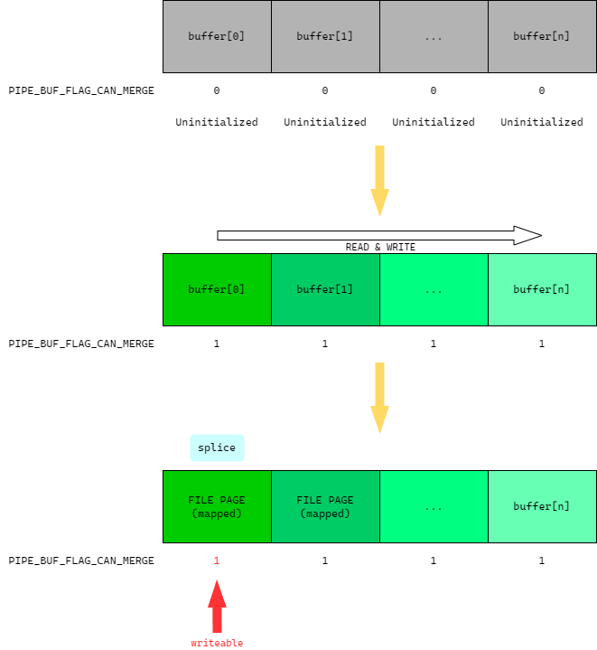

Dirty Pipe漏洞较Dirty COW发现的时间较晚，但也正因为此，它影响了更多的Linux发行版。既然同是带Dirty的漏洞，这个漏洞就同样是与条件竞争有关。
漏洞：CVE-2016-5195
影响Linux版本：>5.8, <5.16.11 / 5.15.25 / 5.10.102
漏洞类型：竞争条件
使用Linux样本：5.16.10
编译环境：Ubuntu 20.04
参考资料：
前置知识
Linux管道基础
Linux管道是Linux进程间通信的一种方式。它的表现形式比较容易理解。试想一下，将我们带入到Linux开发者的身份中来，如果我们需要设计进程之间通信的方式，最容易想到的是什么？是的，我们可以将管道以文件的形式进行设计：
- 创建管道可以通过创建文件来完成，这个文件与一般的文件不同，可以设置读写权限。
- 若进程A与B之间需要进行通信，假设只有A发送数据给B，即单方向通信，那么通信步骤可以这样设计：
- 进程A需要传输数据时，向管道文件写入数据，此时文件中保存的是进程A的数据。
- 进程B需要接受数据时，向管道文件读取数据，读取完成的数据在管道文件中自动删除，保证文件中只剩下未被读取的数据。
从上面的示例来看，这是一种典型的“生产者-消费者”模式，相信大家在学习线程的基础知识时已经了解过。当然为了实际使用的便捷考虑，最终的设计比上面的示例要复杂许多。
在Linux中有两类管道，一类是匿名管道，像shell命令中的’|'实际上就是创建了一个匿名管道，还有在程序内部父进程与子进程使用的一些管道为匿名管道。匿名管道由于没有命名，因此对外界是不可见的。另一类则是命名管道，这种管道有实际名字，可以在文件系统中被任何进程所访问，因此相较于匿名管道更为“开放”。
如果我们创建一个命名的管道文件，使用ls命令查看时，它的权限字符串以p开头，表示管道文件。打开这类文件产生的文件描述符不能被传入lseek中，因此可以想见管道文件的file_operations中lseek字段为NULL。
Linux管道内部机制
上面我们了解了Linux管道的基础知识，下面我们需要深入到Linux内核了解它的实现机制。
既然管道是以文件的形式存在，那么在文件系统中就必然存在它对应的inode，只不过这个inode没有表示实际文件，是一个虚拟的inode。
在Linux内核中，表示inode的结构体为@pipe_inode_info，在结构体@inode中有一个union字段，根据不同的文件类型有不同的结构体：
1 | union { |
下面，我们通过pipe系统调用跟踪内核创建管道文件的过程。
pipe系统调用和pipe2都可以用于创建管道，唯一的区别是参数不同，pipe2可以多指定一个flags参数，主要用于管道操作的一些细节。
既然pipe系统调用可以返回两个整数文件描述符，那么我们实际上可以将其看做文件。既然是文件，那么在拥有文件描述符后必然就会拥有对应的file_operations实例。对于管道文件。它的file_operations为@pipefifo_fops。其中定义了对管道的读操作应该调用pipe_read，写操作应该调用pipe_write。这两个函数与本漏洞密切相关，下面简单分析一下。
pipe_read
该函数传入两个参数，struct kiocb*以及struct iov_iter*，前者是kernel I/O control block的缩写，用于控制异步操作。后者为I/O vectors，可以用于封装多个I/O向量，能够处理多个缓冲区数据。
函数中的主要逻辑是一个大循环。这个循环的逻辑非常清晰，并且向我们展示了管道缓冲区的使用方式。Linux的管道缓冲区根据现实需求，应该被设计为一个队列。但Linux的设计却比一般的队列要优雅很多。首先，定义mask、start、end，标志缓冲区的总数，队列头部和队列尾部。根据代码逻辑可知，管道缓冲区的start始终不小于end，新的缓冲区从start处进入，从end处弹出。巧妙的是，Linux并不需要在队列头部到达最大缓冲区数量时将start重置为0，而是直接使用mask取模即可。另外，每一个缓冲区的长度不是固定的，定义了off和len，表示应该开始读取的位置以及剩余的数据长度。回到pipe_read中，每一次循环所做的实际上就是读取队尾的缓冲区并将其输出到read端，如果输出的字节数未达到read要求，则弹出最后的缓冲区进入下一次循环判断新的队尾。
pipe_write
写入的过程比读取要略微复杂一些。考虑到读取的效率问题，如果每一次写入都分配一个新的缓冲区，那么当单次写入数据较少时，整个队列缓冲区就会变得非常小，效率也会大大降低。因此当缓冲区不为空时，写入进程会尝试将数据合并到一个缓冲区内以避免缓冲区过小的问题。在Linux中，一个缓冲区以一页为单位。write进程会尽量填满缓冲区的一页内容。需要注意的是，可以合并的页必须有PIPE_BUF_FLAG_CAN_MERGE标志位才能够进行合并，这个标志位意味着该页可写且可合并。如果缓冲区没有设置该位，说明这个缓冲区还没有被初始化，需要首先分配一个物理页并设置该标志位。
splice系统调用
这个系统调用能够将文件读取到管道中，可以指定文件偏移以及输出的偏移。在本漏洞中，起重要作用的是将文件内容读取到管道的流程。
这个系统调用的函数调用链较长，在do_splice中会判断数据流向的方向，随后文件->管道与管道->文件将走向不同的数据流。在file_operations中，内核专门定义了两个用于splice的函数指针：splice_read和splice_write，用于管道与文件的交互。对于一个普通文件，应该在ext4_file_operations中查找对应的函数，为generic_file_splice_read。
1 | sys_splice |
而在@__copy_to_page_iter_pipe中，可以清晰看到，文件映射页被直接作为缓冲区使用。但在查看相关执行流程时，我们并没有看到文件映射页面被载入到缓冲区时重置PIPE_BUF_FLAG_CAN_MERGE标志位的情况，也就是说，如果管道缓冲区已经被完全读写过一次，就可以通过向管道写入数据的方式向文件映射页写入数据！
通过上面的分析，我们不难发现，Linux内核开发人员为了提高效率，选择在文件映射后直接将映射页作为缓冲区，但却并没有移除写权限。See？这看似是一种非常低级的开发安全问题，但却能实实在在地存在于Linux内核中并影响众多发行版。
通过该漏洞，我们可以修改只读文件。在普通用户权限下，可以通过修改/etc/passwd这种具有suid权限的可执行文件完成提权，如将/etc/passwd修改执行/bin/sh等。
但本漏洞利用有一定的限制，考虑到要将文件调入，因此至少需要读取文件的第1个字节，故文件的第1个字节不允许修改；不能通过该漏洞将文件变大；最多只能写入1页内容。在本文的主要参考资料中，/etc/passwd被修改为一个小型elf程序而不是shell文件，用于执行/bin/sh。

poc
poc来源：资料（在此%一下Arttnba师傅）
1 |
|